大地史书
一块石头的故事
by 高家·子琦子瑞的爸爸
今天，我来送你们一段历史
这是一个矿石盲盒，一张历史的入场券
每个人，都有一块石头
把这块石头攥在左手，用体温去温暖它。
用右手的拇指和食指捏起来，举过头顶！
这块石头，有多老？
- 10岁？
- 100岁？
- 比你爷爷的爷爷的爷爷……还要老吗？
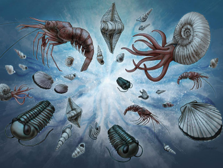
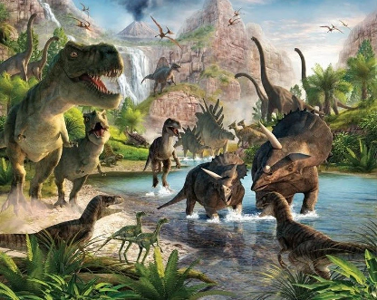
它是历史
- 它比你们认识的任何一个人都要老。
- 它不是普通的石头，它是历史。
- 今天我们要读的，是《大地史书》。
世界，并不是一开始就存在
宇宙大爆炸：一切的开始
地球，正在被时间改写
一颗正在被“书写”的星球
如果地球历史是一本书……
假如地球历史是一本有 4600 页的厚书...
人类出现在最后一页的最后一段。
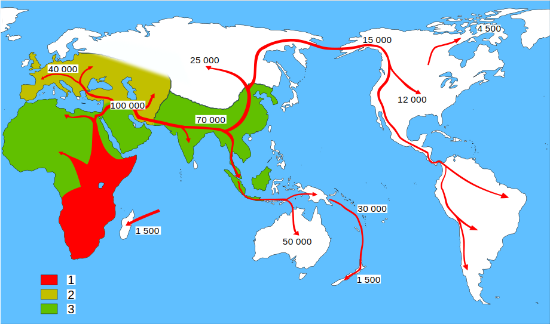从岩石到文明
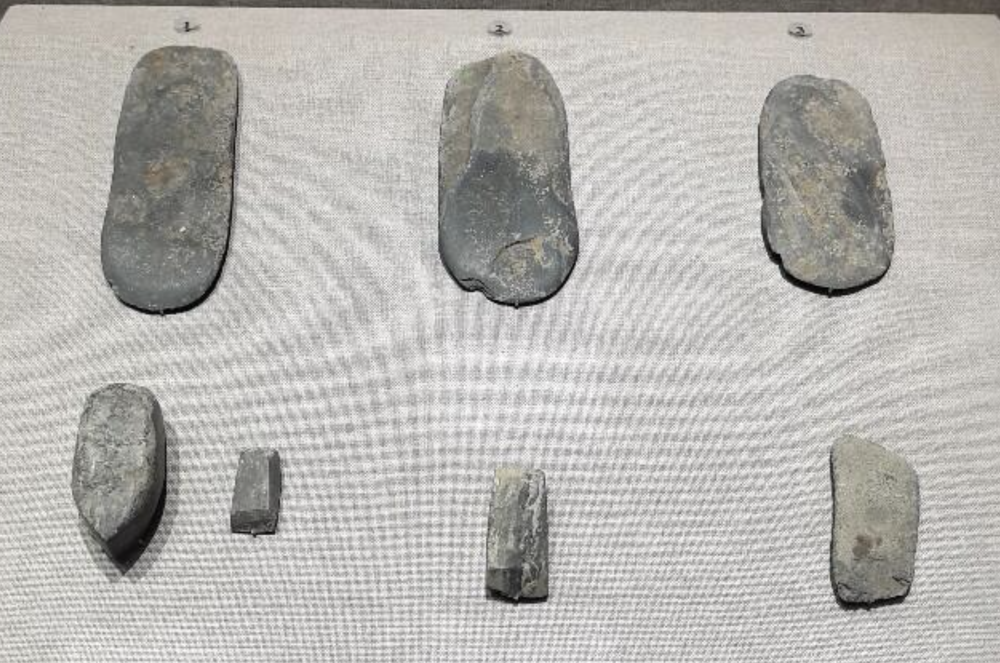
岩石

泥土

农耕
按“下”键继续探索
岩石，也会改变
风、雨、冷热、植物的根，都在慢慢改变石头，把它变成土壤。
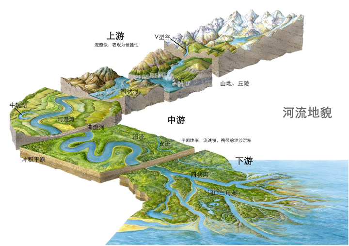土壤：生命的基础
土壤，是会长生命的石头。
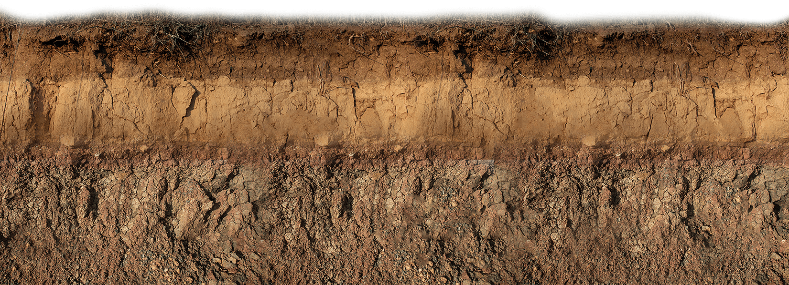历史开始加速
农耕文明 → 工业文明 → 信息文明
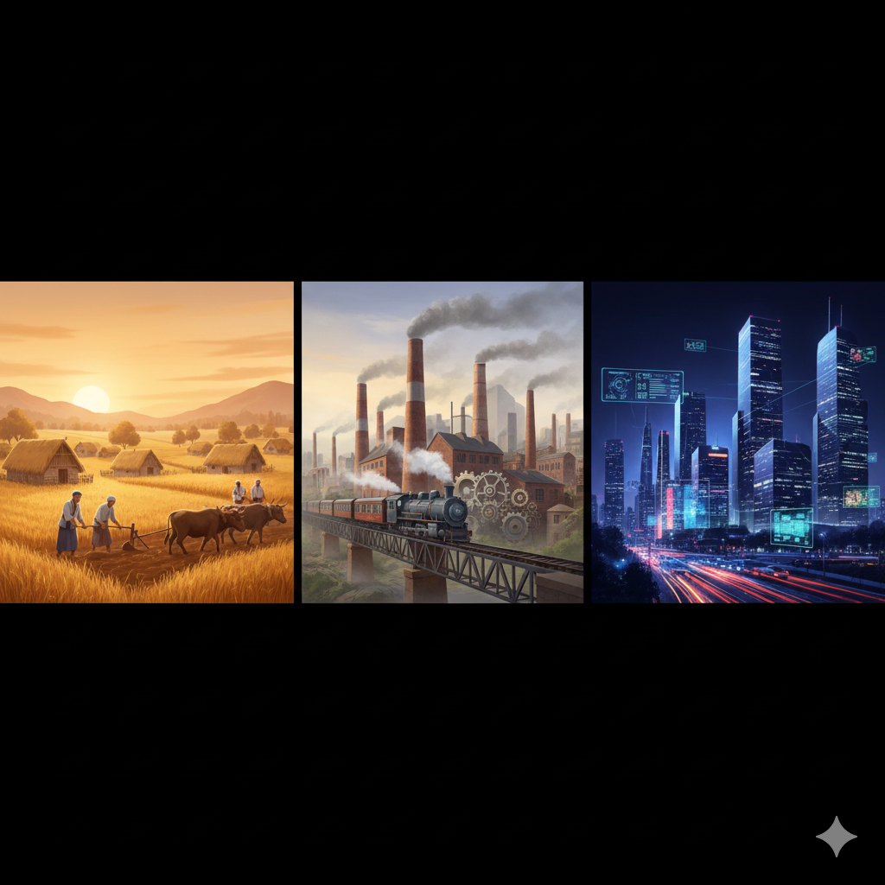我们每天看到的喻家山
也在写历史
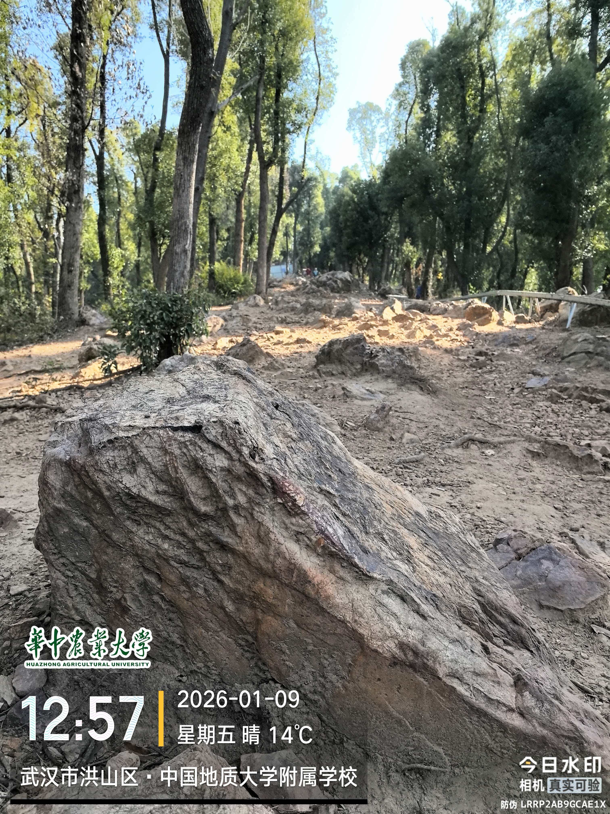
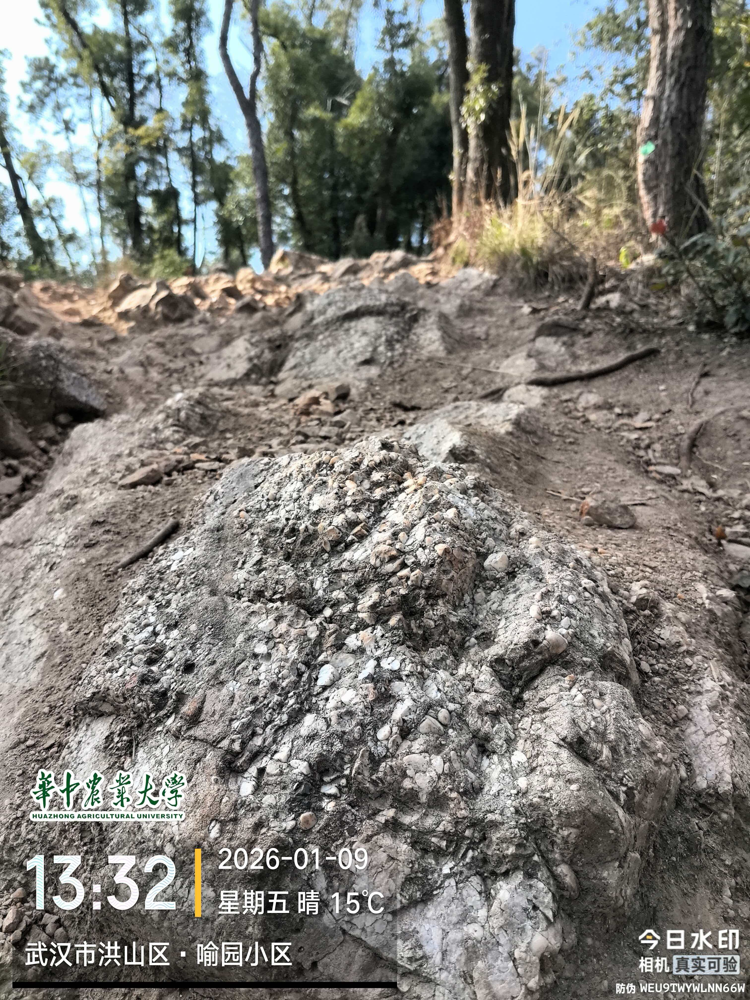
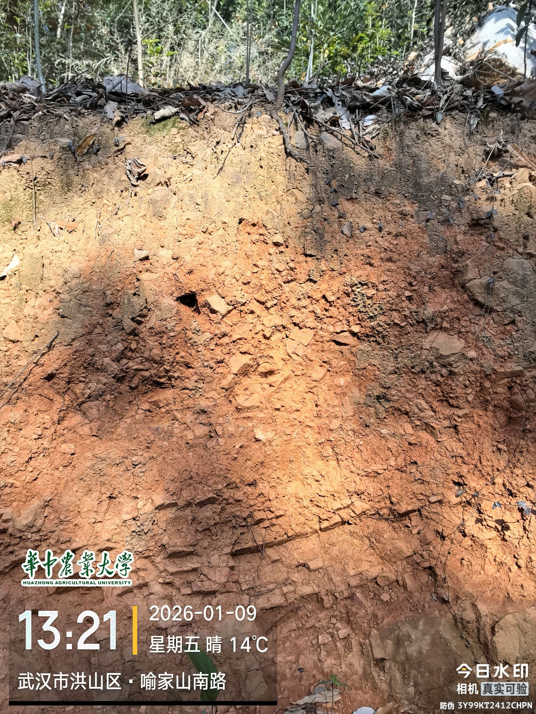
石英：很普通的石头
沙子：满世界都是
它是所有岩石中最抗风化的矿物（没有之一）
晶圆：岩石开始变聪明的第一步
芯片：会思考的沙子
石英 → 半导体 → 芯片 → 人工智能
你手机里最聪明的部分，来自地球里最普通的东西。
人类仍把石头变成新的工具
过去，先民用石头制造斧子、凿子和箭头
现在，我们用激光在沙子上雕刻电路
文明发展了一万年，人们依然离不开石头！
人工智能正在学习
速度越来越快


年初的宇树机器人还只能丢手绢, 年底已经可以翻筋斗了
量子计算：算力的跃迁
经典计算：一步一步算
量子计算：一次尝试很多种可能
算力越强，责任越大
算力越强，越需要人类知道该用来做什么。
我们是谁？
我们是历史的读者...
也是作者。
不同的时代，不同的命运
战争年代 (松山娃娃兵)
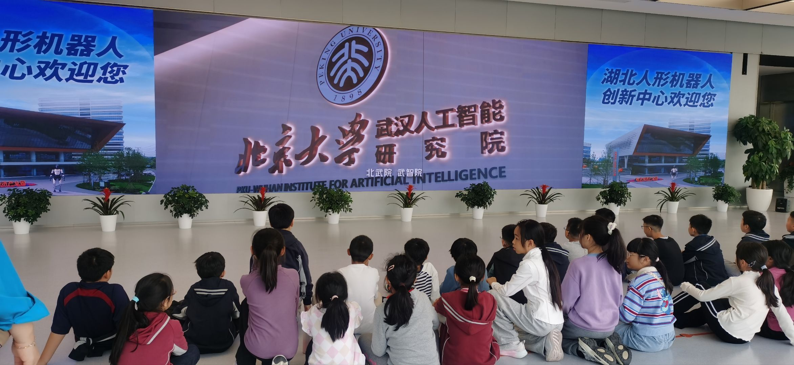
和平年代 (501班秋游)
未来，需要你们去创造
学习 · 思考 · 创造
最佳参与奖 · 走向世界
奖励：巴厘岛岩浆岩兑换券
（注：下周一可凭券到家里领取）
天高地阔，走向世界。
你们，也正在被写进历史
一块石头 · 一段时间 · 一种眼光